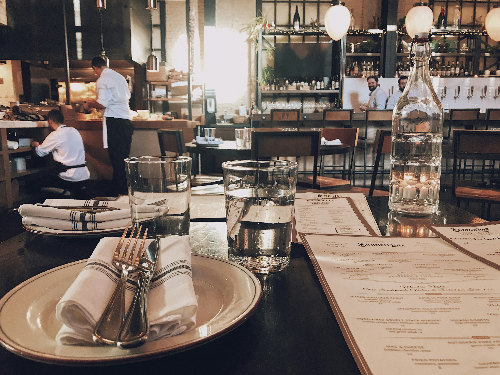

Welcome to The Vintage Fork Diner
Where Classic Flavors Meet Contemporary Comfort

Have you ever needed a place to stop by and be served by a place that the quality of your food and service. Well then...you have come to the right place where we do our best to always meet those standards of yours. So come on down and experience a delightful blend of our finest foods.
This Weeks Special
Our special this week is the all meat platter, where it aims to satisfy all of your meat cravings all in one platter. The meats include chicken, beef, bacon, steak, and lamb with our special sauce at the side.
Reviews
Over the years, we have had many guests, including food critics who have came by and rated our food. Here are some of the comments left by them:
“In all of my years, I haven't had a diner treat me exceptionally well with service, and especially the food!”— Alexander Reznoff, 10/10